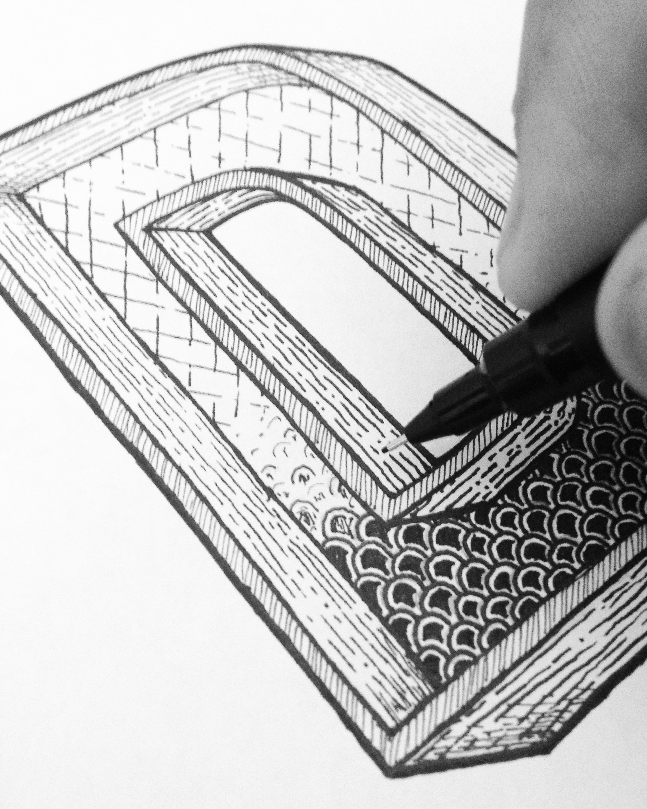
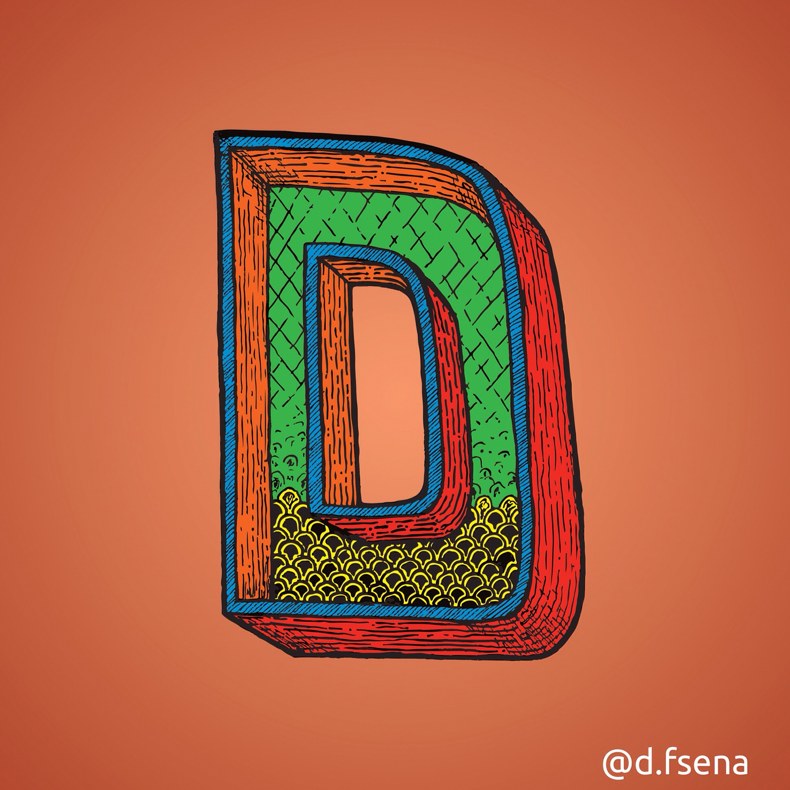
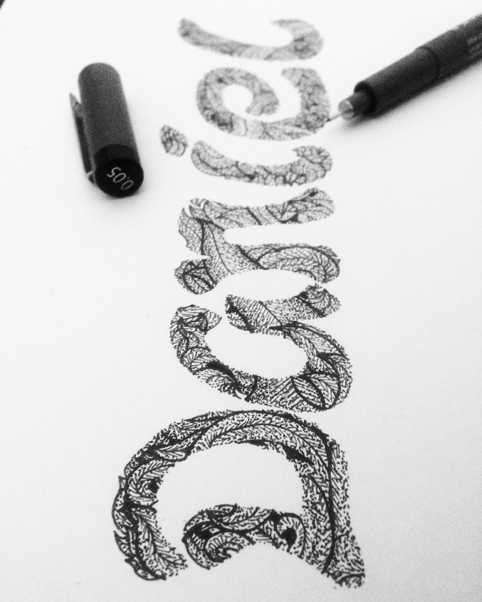
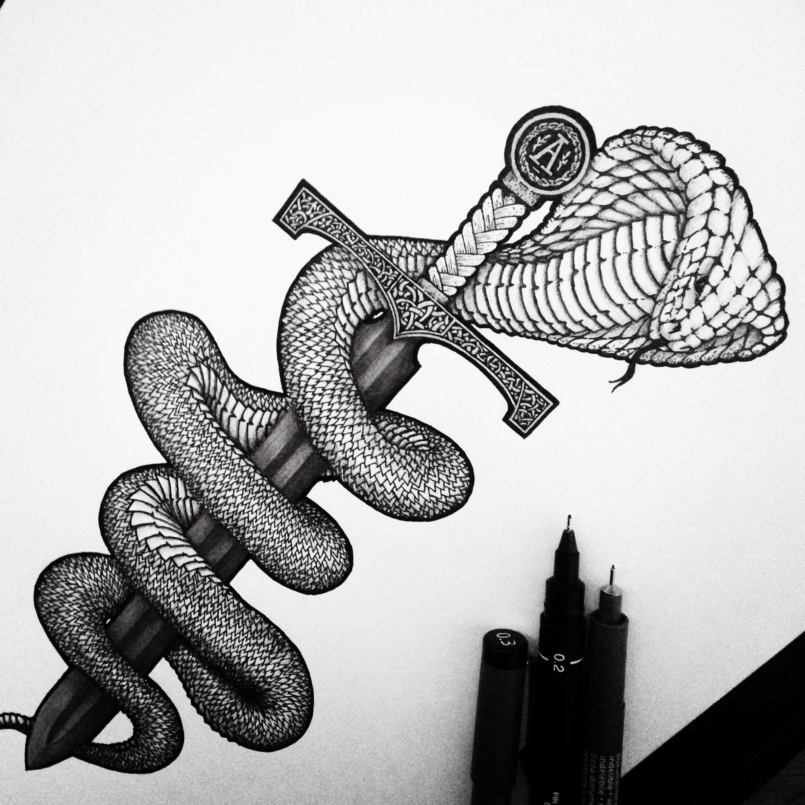
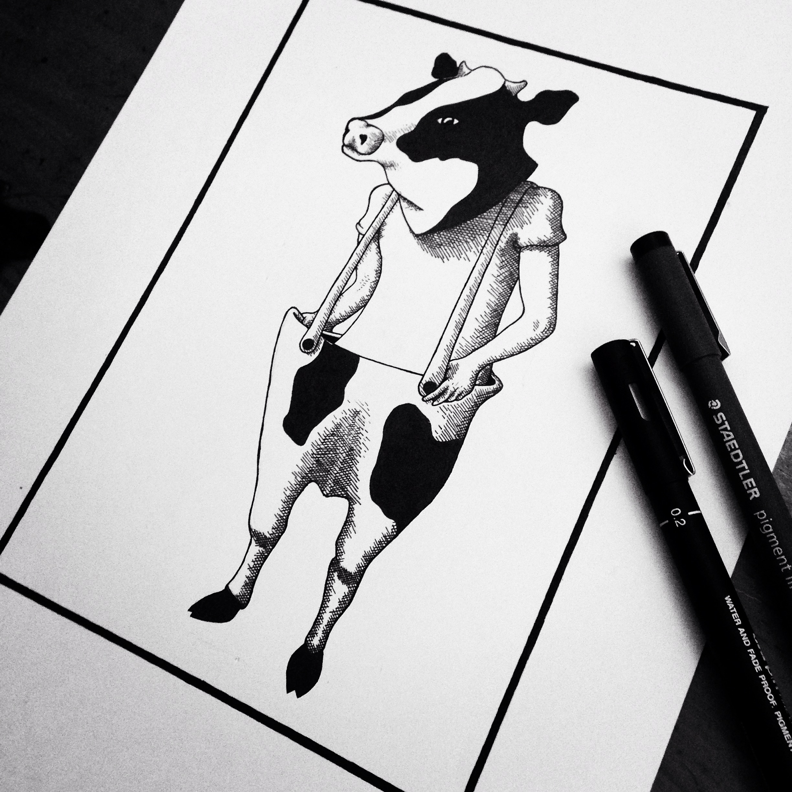
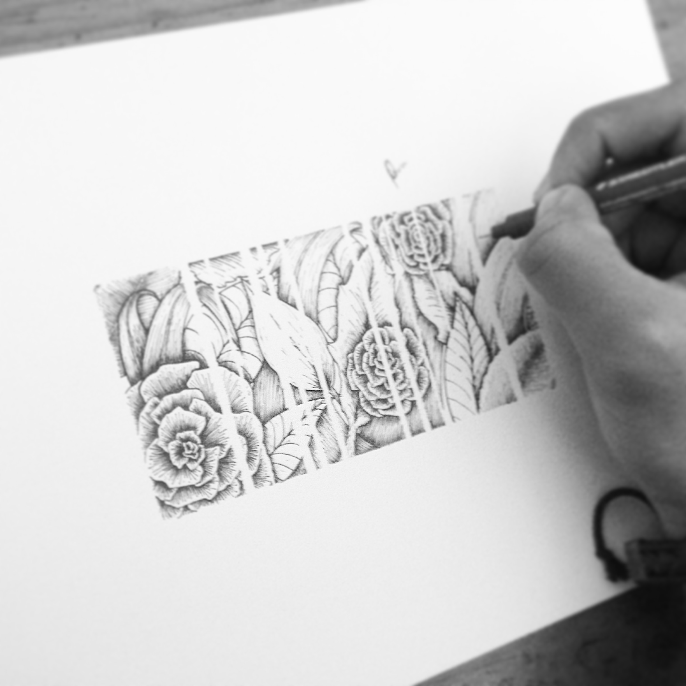
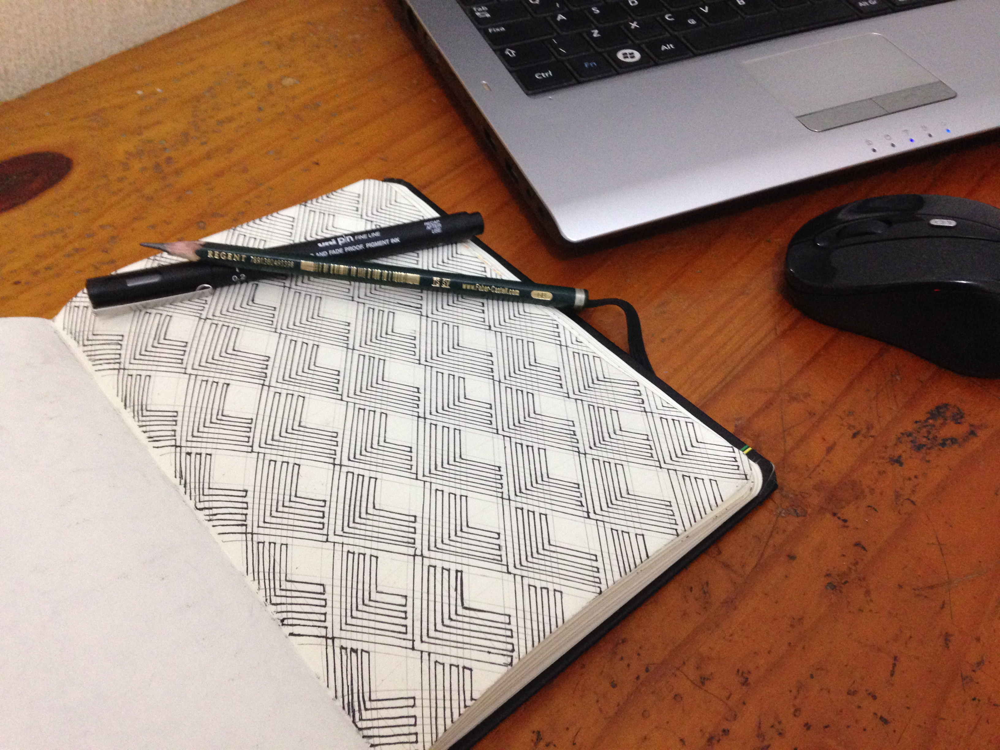

-

Ilustração "D"
Ilustração da letra "D" com experimentação de vários estilos de padrão nas formas, com um estilo mais livre e despojado.
Complementada com pintura digital no Adobe Photoshop, brincando com as cores e seus complementos.
Ilustrações
-

Ilustração "D"
Ilustração da letra "D" com experimentação de vários estilos de padrão nas formas, com um estilo mais livre e despojado.
Complementada com pintura digital no Adobe Photoshop, brincando com as cores e seus complementos.
-

Lettering
Lettering experimental, com aplicações de padrão em formato de folhagem em preto e branco.
-

Ilustração Tattoo
Ilustração produzida a partir de um pedido para tatuagem, utilizando lápis grafite com diferentes tonalidades para formar o sombreamento, contornos e detalhes finalizados em caneta.
-

Ilustração Livre
Ilustração livre realizada com mesclagem de estilos, experimentação de cross hatching, utilizando apenas canetas.
-

Flores e padrão
Ilustração baseada no estilo de tatuagem, com aplicação de pontilhamento, padrões e hachuras.
-

Arte Bakairi
Ilustração baseada na arte indígena "Bakairi". Utilizada comumente como pintura corporal, decidi criar um padrão com os formatos.
Complementada com pintura digital no Adobe Photoshop.
-

Arte Bakairi
Ilustração baseada na arte indígena "Bakairi". Utilizada comumente como pintura corporal, decidi criar um padrão com os formatos.
Complementada com pintura digital no Adobe Photoshop.